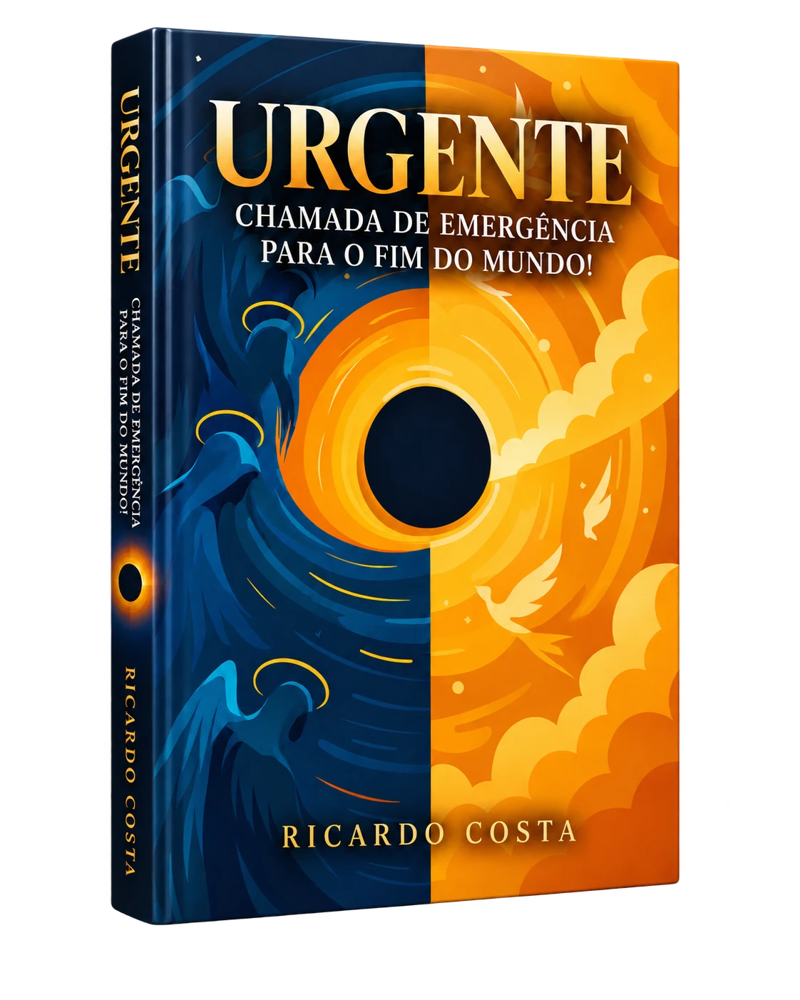
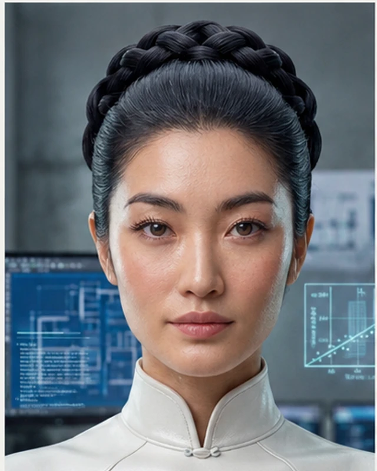
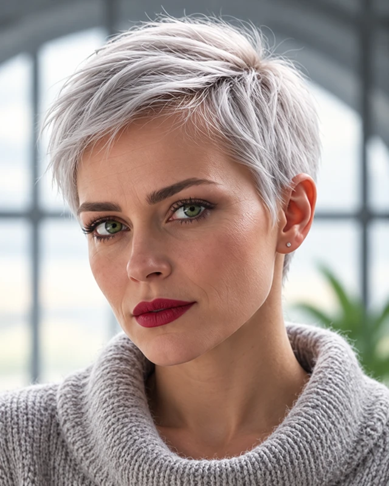

Pós-escassez
Ninguém precisa de nada. Quase ninguém sabe o que fazer.
Uma ficção sobre o futuro — e o que sobra de nós dentro dele.

Um futuro sem escassez, quase sem dor e perigosamente sem perguntas.
Ninguém precisa de nada. Quase ninguém sabe o que fazer.
Algoritmos que sentem por você — e melhor do que você.
Sem dor, sem ruído, sem erro. Talvez sem nada.
Cada um tenta sobreviver ao mundo perfeito à sua maneira. O mundo, como sempre, não coopera.
O homem que queria a última pergunta, não uma resposta.

A mulher que suspeita que até o cosmos tem problemas de arquitetura.
O único a notar que o fim do mundo estava previsto no contrato.

Sente o que os algoritmos não conseguem mapear.
O desconforto surge em detalhes íntimos, burocráticos e aparentemente banais.
Jardins digitais cultivados à mão.
Formulário oficial para sentir saudade.
IAs que sabem chorar com você.
E agora o problema é acordar antes do fim.
Começar a leitura → Harmocentrismo · MMXXVI